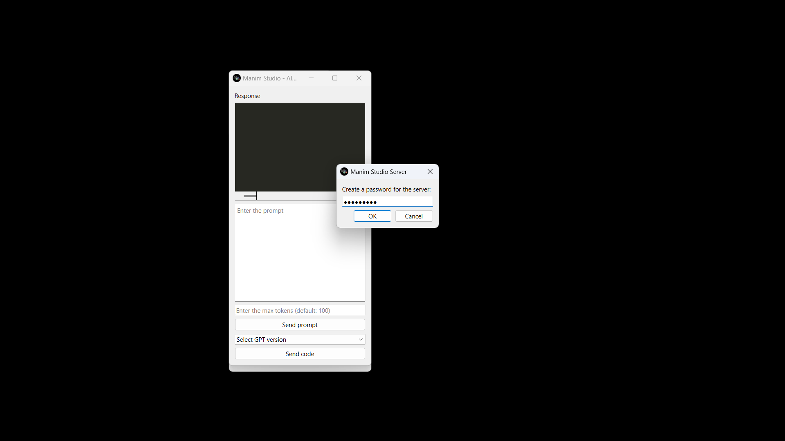
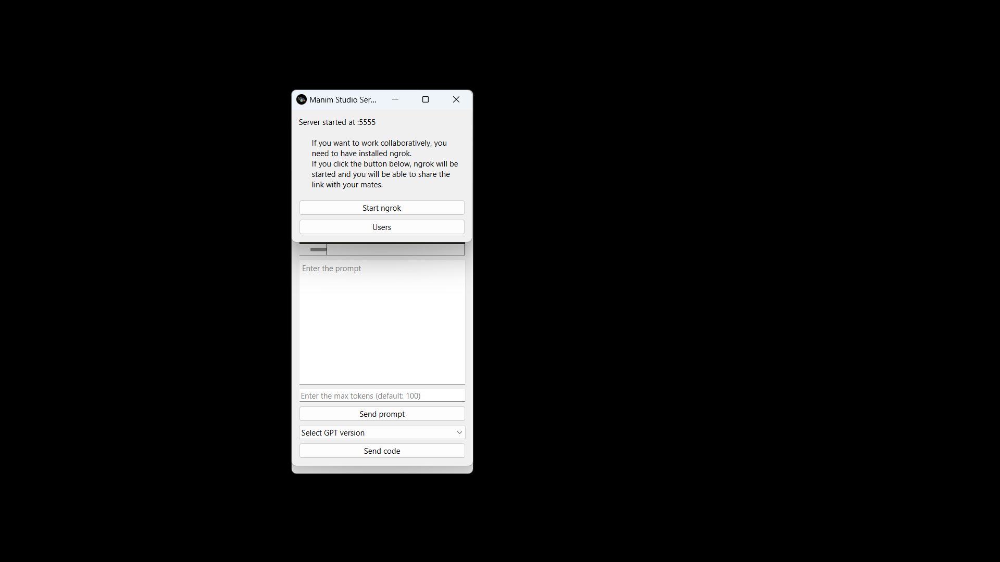
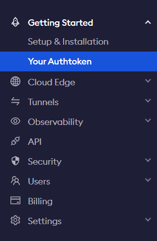
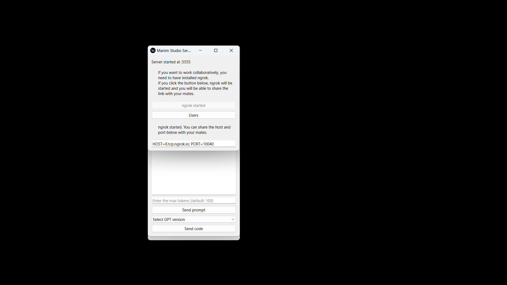
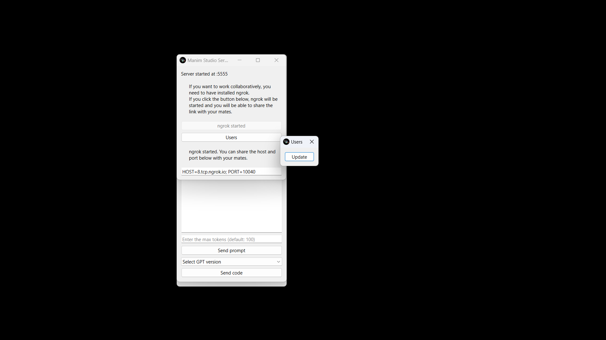
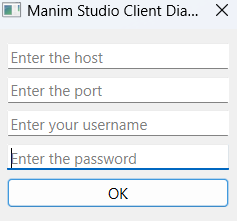
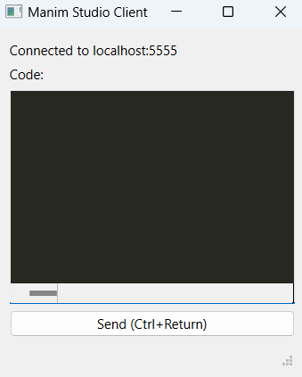
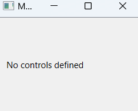

Collaborative work#
Manim Studio has a feature that allows to collaborate on a project with other people. The owner creates a server and other people can connect to it and work on the same projects thanks to Manim Studio Client.
Initialize a server#
To initialize a server, you need to run the following command:
manim-studio -S
This will open Manim Studio and show the following prompt:
It’s asking you to enter a password. This password will be used by the clients to connect to the server.
When you click on “OK”, the server will start and you will see the following window:
The server is now running and waiting for clients to connect. You can share it globally or locally. To share it globally, you must create an account on ngrok and follow the instructions to get it. If you didn’t do it yet, end the scene in the editor and close all windows. Once you did it, you must go to “Your Authtoken” and copy the token.
Then, you must run the following command:
ngrok config add-authtoken <your-token>
Now, you can click on the server window the button “Start ngrok” and it will start the server and ngrok.
You can now share the link to the server to other people and they will be able to connect to it through Manim Studio Client.
You can see who connected to the server clicking “Users” button.
Connect to a server#
To connect to a server, you need to run the following command:
manim-studio -C
This will open Manim Studio Client and show the following prompt:
You must enter the link, port, an username and the pasword to connect to the server. The username cannot be already used by another user. Once you entered all the information, click on “OK” andif the password is correct, you will be connected and see the following window:
And also, you will see another window, which is the controls window. This window allows you to control the scene through the controls the owner of the server has created.
Now you can send code to the server and see the result in the owner’s scene window!